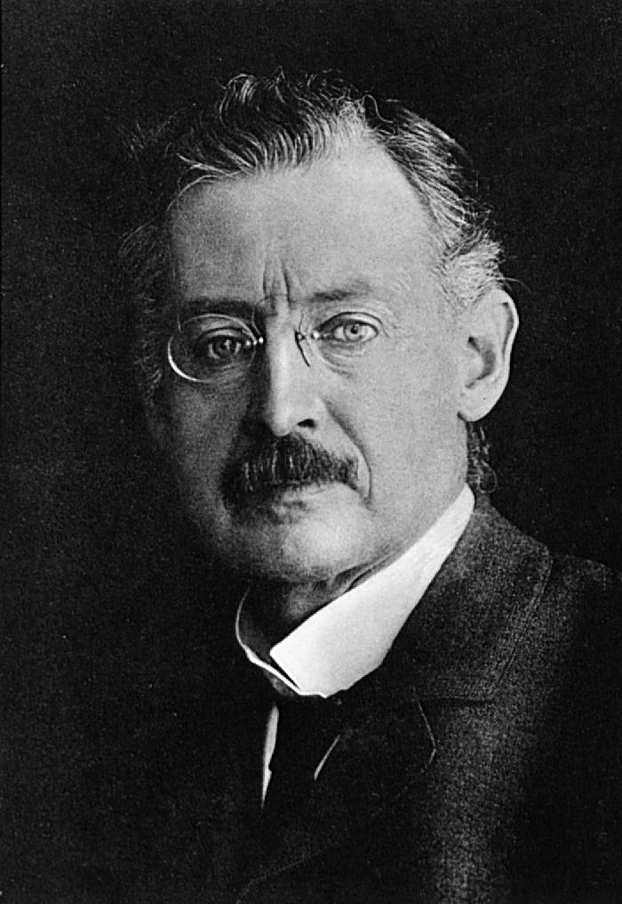
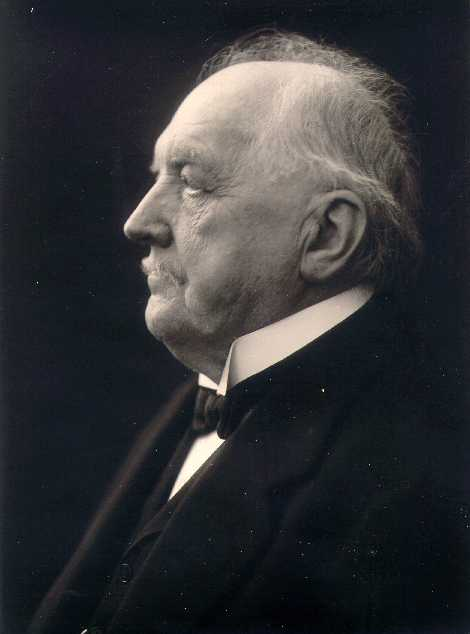

2. Explicit Runge-Kutta Methods#
{kind=link}

Fig. 2.1 Carl Runge (1856 - 1927)#
{kind=link}

Fig. 2.2 Martin Kutta (1867 - 1944)#
In the previous chapter we saw that Euler’s method is simple to implement but often requires very small step sizes to obtain accurate solutions. Runge-Kutta methods improve accuracy by evaluating the derivative several times within each step and combining these evaluations in a carefully chosen weighted average. They form one of the most important classes of numerical methods for solving ordinary differential equations and are widely used in science and engineering.
The Runge-Kutta method was developed independently by German mathematicians Carl Runge and Martin Kutta in the late 19th century. Runge-Kutta methods are known as single step methods, since we only require values at the current step to advance the solution to the next, as opposed to multistep methods such as the linear multistep methods family of methods that require values from multiple steps to compute the next step.
2.1. General form of a Runge-Kutta method#
The key idea of a Runge-Kutta method is that, instead of using a single estimate of the derivative as in Euler’s method, several derivative evaluations are computed within each step. These derivative evaluations are called stages.
The general form of a Runge-Kutta method for solving the initial value problem \(y' =f(t,y)\), \(t \in [t_0, t_{\max}]\), \(y(t_0) = y_0\) is
where \(k_i\) for \(i = 1,2, \ldots, s\) are the stages which used to calculate \(y_{n+1}\). The coefficient \(c_i\) determines where within the step the derivative is evaluated, while \(a_{ij}\) determines how previous stage values are combined and \(b_i\) determines how the stages are weighted to compute \(y_{n+1}\).
For example, Heun’s method is a 2-stage Runge-Kutta method which is written as
The general form of a 2-stage method is
So comparing equations (2.2) and (2.3) we can see that
2.1.1. Butcher tableau#
Runge-Kutta methods are often summarised in a Butcher tableau named after the New Zealand mathematician John Butcher. A Butcher tableau is a table of values containing the coefficients \(a_{ij}\), \(b_i\) and \(c_i\) for a Runge-Kutta method
For example, the Butcher tableau for the RK2 method in equation (2.2) is
Example 2.1
Determine theButcher tableau corresponding to the following four-stage Runge-Kutta method
Solution
Comparing the Runge-Kutta method above to the general form of a 4-stage Runge-Kutta method we can see that the Butcher tableau is
2.2. Explicit and implicit Runge-Kutta methods#
Not all Runge-Kutta methods can be evaluated stage-by-stage. Depending on the coefficient matrix \(A = (a_{ij})\), the stage equations may need to be solved simultaneously. This distinction leads to the classification of Runge-Kutta methods as explicit or implicit.
The stage values for an \(s\)-stage Runge-Kutta method are
In the first equation we are calculating \(k_1\) includes \(k_1\) on the right-hand side and in the second equation we are calculating \(k_2\) includes \(k_2\) on the right-hand side and so on. These are examples of implicit functions and Runge-Kutta methods where the stage values are expressed using implicit functions are known as Implicit Runge-Kutta (IRK) methods. To calculate the solution of the stage values of an IRK method involves solving a system of equations (see Implicit Runge-Kutta Methods).
If the summation in the stage value \(k_i\) in equation (2.1) is altered so the upper limit to the sum is \(i-1\), i.e.,
and let \(c_1 = 0\) then we have the following equations for calculating the stage values
These stage values are explicit functions where the subject of the equation does not appear on the right-hand side. Runge-Kutta methods where the stages values are calculated using explicit functions are known as Explicit Runge Kutta (ERK) methods. These are easier to compute than implicit Runge-Kutta methods because the stage values can be calculated sequentially in order, i.e., \(k_1\) can be calculated using \(t_n\) and \(y_n\); \(k_1\) is then used to compute \(k_2\); \(k_1\) and \(k_2\) are then used to compute \(k_3\) and so on. However for some ODEs explicit methods require a very small value for the step length and and we must then use implicit methods (see the chapter on stability for more details).
Explicit and implicit Runge-Kutta methods can be easily distinguished by looking at their Butcher tableaux. An explicit method satisfies
so the coefficient matrix \(A\) is strictly lower triangular, whereas an implicit method will have at least one non-zero element in the upper triangular region or main diagonal.